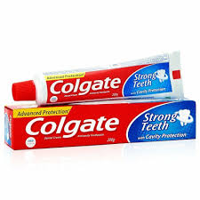
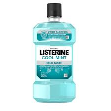
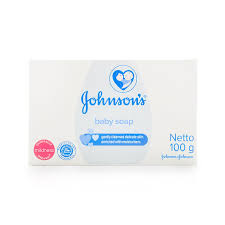
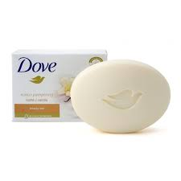
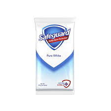
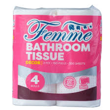
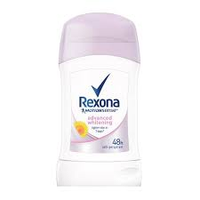
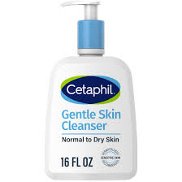
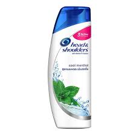
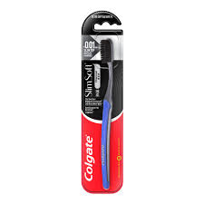

|

Colgate
Size Options: Common sizes include Small (25g-50g), Regular (100g-150g), and Family Size (200g+)
Main Ingredients (Classic Colgate Total): Fluoride, hydrated silica, glycerin, sorbitol, sodium lauryl sulfate, carrageenan, and flavoring agents.
Colgate is one of the world’s most trusted oral care brands, offering a wide range of toothpastes, mouthwashes, and toothbrushes designed to maintain healthy teeth and fresh breath. Known for its effective cavity protection and fluoride-based formulas, Colgate provides specialized products such as whitening, herbal, charcoal, and sensitivity care variants. Whether for kids, adults, or those with specific dental needs, Colgate remains a household staple for everyday oral hygiene.
|

Listerine
Size Options: Common sizes include Small (100mL-250mL), Regular (500mL), and Large (750mL-1L).
Main Ingredients (Classic Listerine Cool Mint): Water, alcohol (21.6%), eucalyptol, menthol, methyl salicylate, thymol, benzoic acid, and flavoring agents.
Listerine is a powerful antiseptic mouthwash designed to kill bacteria, freshen breath, and improve oral health with its signature blend of essential oils and antiseptic properties. Available in various flavors and formulas, including alcohol-free and specialized gum care options, it provides deep cleaning beyond just brushing. Used daily, Listerine helps fight plaque, prevent cavities, and leave your mouth feeling incredibly fresh and clean.
|

johnsonsNjohnsons
Size Options: Common sizes include Small (50g), Regular (75g-100g), and Large (125g+).
Main Ingredients (Classic Johnson’s Baby Soap): Glycerin, Sodium Palmate, Sodium Palm Kernelate, Titanium Dioxide, Mineral Oil, Fragrance, and Aqua (Water).
Johnson’s Baby Soap is a mild and gentle cleansing bar designed specifically for a baby’s delicate skin, providing a soft and smooth feel while maintaining natural moisture. Free from harsh chemicals and parabens, its hypoallergenic formula ensures a safe and soothing bath experience. Trusted by parents worldwide, Johnson’s Baby Soap leaves a fresh, clean scent and is ideal for both babies and adults with sensitive skin.
|

Dove
Size Options: Common sizes include Small (50g), Regular (75g-100g), and Large (135g-150g).
Main Ingredients (Classic Dove White Beauty Bar): Sodium Lauroyl Isethionate, Stearic Acid, Sodium Tallowate, Sodium Palmitate, Water, Glycerin, and Fragrance.
Dove Soap is a moisturizing beauty bar that gently cleanses while nourishing the skin, thanks to its signature ¼ moisturizing cream formula. Unlike regular soaps that can leave skin dry, Dove’s mild and pH-balanced formula helps maintain softness and hydration. Available in various scents and specialty formulas, Dove is a go-to choice for those looking for a gentle, skin-friendly cleansing experience.
|

Safeguard
Size Options: Common sizes include Small (60g), Regular (90g-100g), and Large (130g-150g).
Main Ingredients (Classic Safeguard White Soap): Sodium Palmate, Sodium Palm Kernelate, Water, Glycerin, Fragrance, Triclocarban (antibacterial agent), Titanium Dioxide.
Safeguard Soap is a trusted antibacterial cleansing bar that effectively removes 99.9% of germs while keeping the skin fresh and clean. Known for its signature Pure White formula, Safeguard offers a range of scents and variants that cater to different skin needs, from refreshing lemon to deep-cleansing charcoal. Dermatologist-recommended and widely used by families, Safeguard provides long-lasting protection against bacteria and odors.
|
|

Tisyu
Layer Options: 1-ply, 2-ply, 3-ply, or 4-ply
Wood Pulp or Recycled Paper Fibers: ~80-100% Moisture Content (in Wet Wipes): ~5-30% Added Lotion or Soothing Agents (Facial Tissue): ~1-5% Fragrance or Aloe Vera (if scented): ~1-3%
Tissue paper is a soft, lightweight, and disposable paper product used for hygiene, cleaning, and personal care. Available in different types such as facial tissues, toilet paper, and wet wipes, it provides convenience and comfort in everyday life. Whether scented, antibacterial, or eco-friendly, tissue products are essential for maintaining cleanliness and hygiene at home, in public spaces, and on the go.
|

Rexona
Main Ingredients (Classic Rexona Roll-On): Aluminum Chlorohydrate (antiperspirant), Aqua (Water), Glycerin, Perfume, Emollients, and Propellants
Rexona is a popular antiperspirant and deodorant brand known for its long-lasting sweat and odor protection, available in roll-on, stick, spray, and cream formulas. With advanced Motionsense™ Technology, Rexona releases fresh fragrance as you move, keeping you dry and confident throughout the day. Whether for daily use, sports activities, or clinical-strength protection, Rexona is trusted worldwide for its effective and reliable performance.
|

Cethaphil
300ml
Main Ingredients (Cetaphil Gentle Skin Cleanser): Water, Cetyl Alcohol, Propylene Glycol, Sodium Lauryl Sulfate, Stearyl Alcohol, and Parabens.
Cetaphil Gentle Care products are dermatologist-recommended skincare essentials designed for sensitive, dry, and normal skin, offering deep hydration while cleansing. Free from harsh soaps and fragrances, Cetaphil’s formulas help maintain the skin’s natural moisture barrier, preventing irritation. Whether used as a daily cleanser, moisturizing cream, or gentle cleansing bar, Cetaphil provides a soothing and effective skincare solution for all ages.
|

Head&Shoulder
Main Ingredients (Classic Clean Variant): Pyrithione Zinc (Anti-Dandruff), Water, Sodium Lauryl Sulfate, Cocamidopropyl Betaine, Glycerin, Fragrance.
Head & Shoulders is a world-renowned anti-dandruff shampoo brand formulated with Pyrithione Zinc to effectively fight flakes, itchiness, and scalp irritation. Designed for daily use, its pH-balanced formula cleanses while nourishing the scalp, leaving hair fresh, soft, and flake-free. Available in a variety of scents and formulations, Head & Shoulders offers solutions for different hair and scalp needs, from cooling menthol to deep hydration.
|

Colgate Brush
Bristle Types: Soft, Medium, Hard, Ultra Soft.
Main Materials: Nylon Bristles, Rubberized Grip, Plastic Handle
Colgate toothbrushes are designed to provide effective plaque removal and promote oral hygiene, available in manual and electric options for all ages. Featuring advanced bristle designs like charcoal-infused, ultra-soft, and spiral bristles, Colgate ensures deep cleaning while being gentle on gums. Whether for kids, adults, or those with sensitive teeth, Colgate offers a variety of toothbrushes to suit different oral care needs.
|